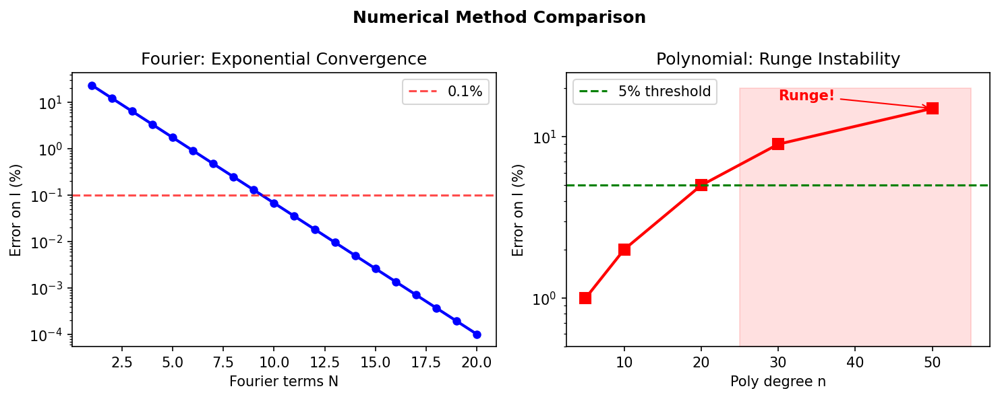
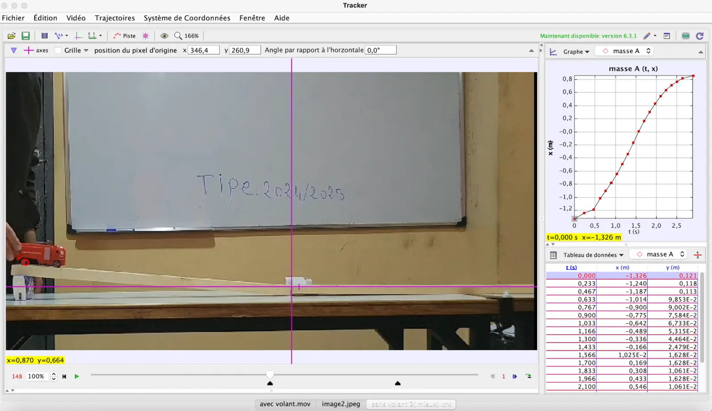

Flywheel Shape Optimization
A reproducible study connecting analytical bounds, numerical parameterizations, solver convergence, and small-scale experimental validation to maximize rotational inertia under geometric constraints.
Maximize moment of inertia
Fourier · polynomial · polar · 3D
L-BFGS-B · trust region
Analytical · numerical · experimental
Where should a fixed amount of material be placed?
For a flywheel of fixed mass and admissible dimensions, stored rotational energy increases with moment of inertia. The optimization question is therefore geometric: redistribute material away from the rotation axis while satisfying area, radius, manufacturability, and regularity constraints.
Multiple representations, one physical objective.
The geometry was expressed through complementary parameterizations to compare numerical behavior rather than relying on a single solver configuration.
- Analytical reference cases establish interpretable upper and lower bounds.
- Fourier and polynomial descriptions provide smooth low-dimensional shapes.
- Polar and 3D formulations test more general geometries.
- Bounded and trust-region solvers are compared through convergence and constraint satisfaction.

Convergence is evaluated, not assumed.

The analysis compares objective improvement, convergence speed, sensitivity to initialization, and constraint compliance. The project documents both successful configurations and solver behavior that is numerically unstable or physically unhelpful.
A miniature vehicle connects the model to observable motion.
Two configurations were compared using tracked trajectories. The experiment is deliberately modest: it tests whether the predicted physical direction is visible, not whether a small apparatus proves a universal performance gain.

The experiment is affected by rolling resistance, alignment, release conditions, and measurement uncertainty. These factors are documented rather than hidden behind a single headline metric.